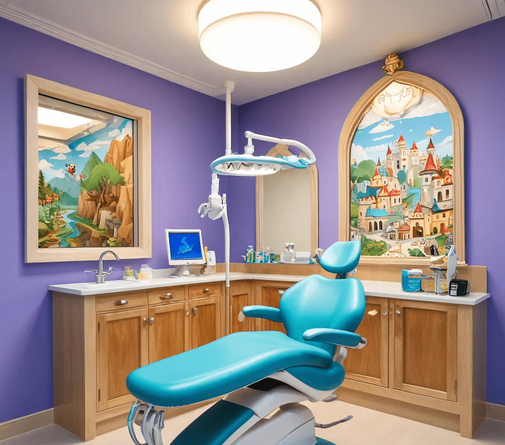
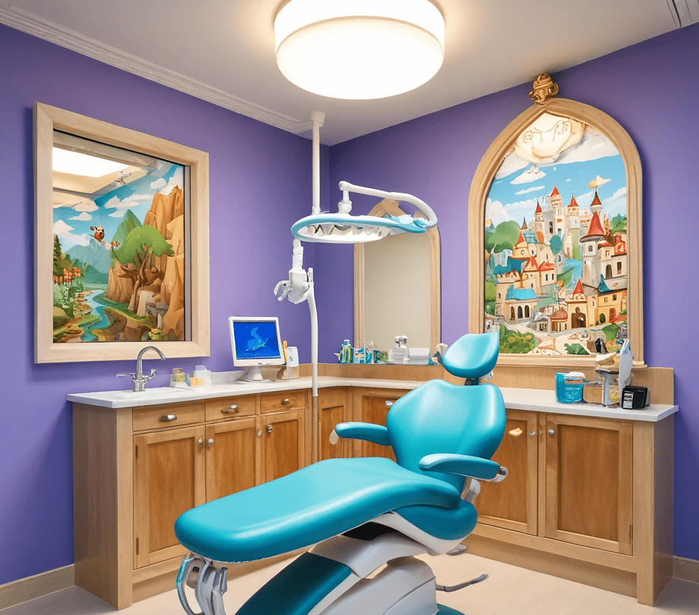

Ubicacion
¿Dónde nos encontramos?
Estamos en Calle Larios, Málaga. ¡Te esperamos!
Somos una clínica especializada en odontología infantil, enfocada en niños con diferentes discapacidades.
.png)
.png)
.png) 

| Servicio | Descripción | Precio |
|---|---|---|
| Primera visita | Enseñar a los niños y padres sobre la importancia del cepillado y el uso del hilo dental y hacerle una primera revisión | Gratuito |
| Fluorización + Higiene | Realización de higiene dental + aplicación de flúor para fortalecer el esmalte dental y prevenir caries. | 30€ |
| Selladores dentales | Aplicación de selladores en los molares para prevenir caries en las fosas y fisuras. | 10€/pieza |
| Servicio | Descripción | Precio |
|---|---|---|
| Tratamiento de caries | Restauración de los dientes afectados por caries con empastes o coronas. | 40€/diente |
| Endodoncia pediátrica | En casos de caries avanzadas, se realiza un tratamiento de conductos en dientes temporales. | 60€ |
| Servicio | Descripción | Precio |
|---|---|---|
| Derivación ortodoncia | Primera visita con ortodoncia para diagnóstico. | Gratuito |
| Ortodoncia interceptiva | Tipo de ortodoncia que se aplica con el objetivo de favorecer el crecimiento del hueso maxilar, así como de la mandíbula. | A valorar |
| Servicio | Descripción | Precio |
|---|---|---|
| Sedación simple | Sedación simple sin necesidad de anestesia general | 300€ |
| Sedación compleja | Sedación simple con necesidad de anestesia general | 700€ |
¿Dónde nos encontramos?
Estamos en Calle Larios, Málaga. ¡Te esperamos!
Lo ideal es llevar a tu hijo al dentista antes de su primer cumpleaños o cuando le salga el primer diente. Esto permite una evaluación temprana y el inicio de buenos hábitos dentales.
Habla con él de manera positiva sobre la visita, explicándole que no es algo doloroso y que el dentista está allí para ayudarle a tener dientes sanos. Puedes leerle cuentos o mostrarle vídeos educativos.
Los selladores dentales son una capa protectora que se aplica sobre los molares para prevenir las caries, especialmente en las áreas donde los niños tienen más dificultad para cepillarse.
Sí, en nuestra clínica, la anestesia que utilizamos es completamente segura y adecuada para los niños. Siempre evaluamos las necesidades específicas de cada paciente para asegurarnos de que estén cómodos y seguros.
En caso de urgencia, como dolor dental o un diente roto, te recomendamos que nos llames inmediatamente para recibir orientación y, si es necesario, programar una cita urgente.
¡Hola! Soy Lucía Villena, tengo 27 años y, aunque actualmente me encuentro estudiando Desarrollo de Aplicaciones Web, mi verdadera pasión y dedicación ha sido siempre el ámbito dental. A lo largo de estos años, lo que más me ha enriquecido de mi profesión es trabajar con niños, y si mi camino continúa por el mundo de la odontología, me gustaría enfocarme en la odontopediatría orientada a pacientes con discapacidad. Sin embargo, mi verdadera ambición es poder explorar y encontrar nuevas formas de integrar la informática en el ámbito dental, con la esperanza de hacer un descubrimiento que aún no se haya logrado.